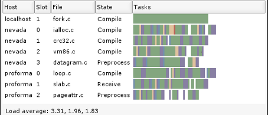

The following presents a set of advanced topics regarding PCL.
Compiling PCL
PCL uses modern C++ template programming in order to achieve maximum generality and reusability of its components. Due to intricate details of the current generation of C++ compilers however, the usage of templated code introduces additional compile-time delays. We present a series of tricks that, if used appropriately, will save you a lot of headaches and will speed up the compilation of your project.
Using CCache to speed up compilation
CCache is a compiler cache. It speeds up recompilation by caching previous compilations and detecting when the same compilation is being done again. Supported languages are C, C++, Objective-C and Objective-C++.

Using DistCC to speed up compilation
distcc is a program to distribute builds of C, C++, Objective C or Objective C++ code across several machines on a network. distcc should always generate the same results as a local build, is simple to install and use, and is usually much faster than a local compile.
-
Depending on what compiler optimizations you use, your code might behave differently, both at compile time and at run time.

-
In certain cases, it’s better to concatenate source files into single compilation units to speed up compiling.

{kind=link}
Developing PCL code
To make our lives easier, and to be able to read and integrate code from each other without causing ourselves headaches, we assembled a set of rules for PCL development that everyone should follow:
Rules
if you make important commits, please _add the commit log_ or something similar _to the changelist page_ (https://github.com/PointCloudLibrary/pcl/blob/master/CHANGES.md);
if you change anything in an existing algorithm, _make sure that there are unit tests_ for it and _make sure that they pass before you commit_ the code;
if you add a new algorithm or method, please _document the code in a similar manner to the existing PCL code_ (or better!), and _add some minimal unit tests_ before you commit it;
method definitions go into (include/.h), templated implementations go into (include/impl/.hpp), non-templated implementations go into (src/.cpp), and unit tests go in (test/.cpp);
last but not least, please _respect the same naming and indentation guidelines_ as you see in the PCL C++ Programming Style Guide.
PCL C++ Programming Style Guide
Please follow the following naming and indentation rules when developing code for PCL.
-
Short documentation on how to add new, throw and handle exceptions in PCL.
PCL 2.x API consideration guide
An in-depth discussion about the PCL 2.x API can be found here.
Committing changes to the git master
In order to oversee the commit messages more easier and that the changelist looks homogeneous please keep the following format:
“* <fixed|bugfix|changed|new> X in @<classname>@ (#<bug number>)”
Improving the PCL documentation
-
In case you want to contribute/help PCL by improving the existing documentation and tutorials/examples, please read our short guide on how to start.
How to build a minimal example
How to build a minimal example
In case you need help to debug your code, please follow this guidelines to write a minimal example.